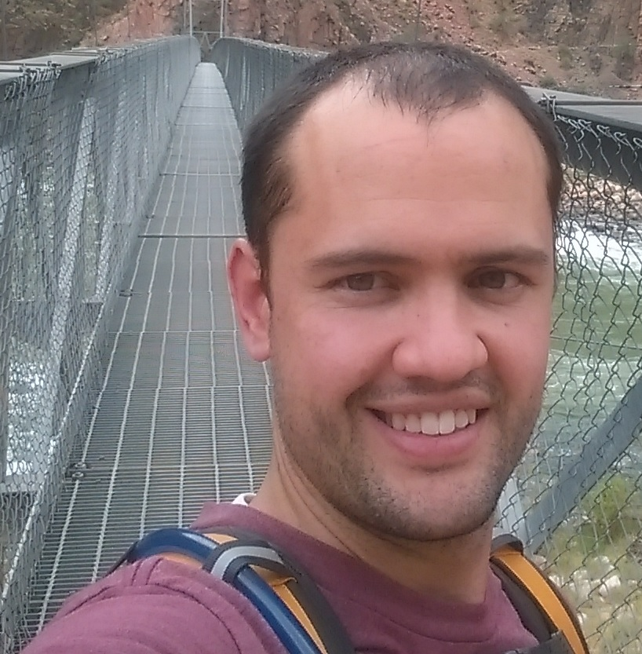

Thomas Benedict
About Me

I decided to get back into school and do this coding boot camp because of changes going on at work and a recent need for more developers. I currently spend a bunch of time working with old VB6 code and MSSQL. I look forward to learning more about the latest development platforms like Node, Angular and just becoming more competant with coding all around.
I am married with 3 children, one daughter and two sons. My family is my life which makes going to school and working fulltime hard. My youngest son who is two is obsessed with vacuums and the word vacuum cannot be used around him unless you want him to relentlessly obsess over it and demand you get it out and start vacuuming. My 5 year old son already takes pride in beeting me at video games and my daughter who is the oldest is obsessed with crafts and is always drawing or creating something.
I love the outdoors especially hiking and kayaking. I own 5 kayaks that my family and I love to take out durring the summer on family friendly rivers or lakes. This past summer I hiked the Grand Canyon and did the rim to rim 23 mile section.
My favorite thing to do at home is play board games and card games with my family and friends. Some of my latest favorites include Porto Rico, Splendor (expansions), Dominion (expansions), 7 Wonders, Smash Up, Kingdom Builders, Acquire, Nertz and I could go on.
Connect With Me